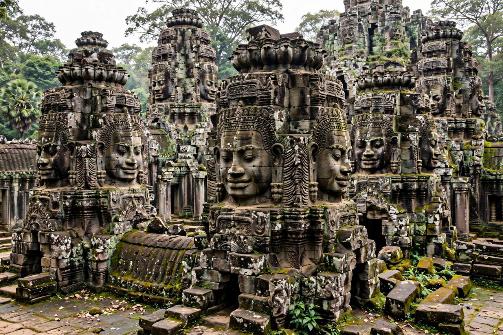

| Bayon | |
|---|---|
 | |
| Location | Angkor Thom, Cambodia |
| Built | Late 12th – early 13th century |
| Builder | Jayavarman VII |
| Religion | Mahayana Buddhism (later Hindu, then Theravada) |
The Bayon (Khmer: ប្រាសាទបាយ័ន) is a richly decorated Khmer temple at the centre of Angkor Thom in present-day Cambodia. Built in the late 12th or early 13th century as the state temple of the Mahayana Buddhist king Jayavarman VII, it is famous above all for the multitude of serene, smiling stone faces carved on its towers — some 216 of them — which gaze out over the former capital.
The Bayon stands on three levels: two concentric galleries of extraordinary bas-reliefs and a circular central sanctuary crowded with face-towers. Its plan has often been read as a model of Mount Meru and the cosmic ocean of Hindu-Buddhist cosmology. Because the temple was repeatedly modified as the state religion changed, its layout is unusually tangled and compressed compared with the open order of nearby Angkor Wat.
The giant faces, each up to about 2 metres high and oriented to the cardinal points, are usually identified as the bodhisattva Avalokiteshvara, possibly bearing the likeness of Jayavarman VII himself. The outer gallery reliefs depict historical events — battles with the Chams, including a great naval battle on the Tonlé Sap — while the inner gallery shows vivid scenes of everyday Khmer life: markets, cockfights, childbirth, fishermen and palace servants, an unmatched picture of the Angkorian world.
Jayavarman VII, who rebuilt the Khmer Empire after the Cham sack of Angkor, made the Bayon the centrepiece of his new walled capital, Angkor Thom. Later Hindu reaction under Jayavarman VIII defaced some Buddhist imagery, and in the Theravada period the temple was adapted again. It was reclaimed from the jungle by French conservation teams in the early 20th century.